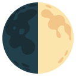
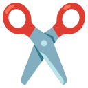

✕
Fechar
Início
Pré-Escolar
1º Ano
2º Ano
3º Ano
4º Ano
Voltar
Metades

Junta as metades!
Escolhe o teu tema!
Animais

Objetos
Transportes & Natureza
Mistura Mágica
TEMAS
Carrega no som para ouvir!
Fantástico!
Chegaste ao fim do caminho mágico!
JOGAR OUTRA VEZ
VOLTAR AO MENU